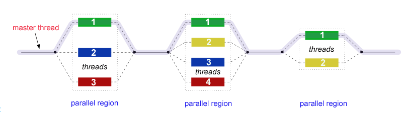

Introduction to OpenMP
- A parallel programming model, an API
- Comprised of
- Compiler directives
- Runtime Library Routines
- Environment Variables
- Programming Model

- All OpenMP programs begin as a single process: the master thread. The master thread executes sequentially until the first parallel region construct is encountered.
- FORK: the master thread then creates a team of parallel threads.
JOIN: When the team threads complete the statements in the parallel region construct, they synchronize and terminate, leaving only the master thread.
Compiler directives statements (start with
#pragma omp) tell compiler that here follows a parallel region- a parallel region is bounded with
{ }
- a parallel region is bounded with
- Runtime Library Routines can give you some informations about your environment
- omp_get_thread_num(). Tells the thread id of the current thread.
- omp_get_num_threads(). Tells the total thread number. If you don't tell compiler how many threads you want to have in your program, it will be the number of your cores by default.
- ... you can find more on internet about this.
- Environment Variables tell compiler that some variables are public and some variables are private.
- As OpenMP is a shared memory model, variables are shared by threads by default.
- You can define private variables
- by
private()statement. - variables defined in parallel region are private variables.
- by
- More details later.